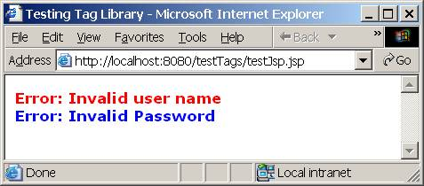
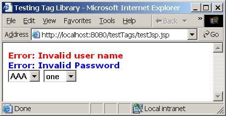

| Abdul Habra, July 6, 2002 |
| ahabra@yahoo.com |
1 Introduction.
1.1 Prerequisites
1.2 Tag Creation Steps
1.3 Two Types of Tags
2 Tags That Do NOT Manipulate Body Contents
2.1 Determine Tag and Attributes
2.2 Create an Empty Web Application
2.3 Write Tag Handler
2.4 Write Tag Library Descriptor (TLD)
2.5 Register Tag Library
2.6 Use Tag Library in a JSP
3 Tags That DO Manipulate Body Contents
3.1 Determine Tag and Attributes
3.2 Create a Web Application
3.3 Write Tag Handler
3.4 Write Tag Library Descriptor (TLD)
3.5 Register Tag Library
3.6 Use Tag Library in a JSP
4 Using Tomcat 4.x and JSP 1.2
5 References
This document explains how to create, deploy, and use a Java custom tag with Tomcat 3.3.1 (JSP 1.1) running on a Windows 2000 system.
1. JDK 1.3 or higher must be installed.
2. Tomcat 3.3.1 must be installed in a directory that we will denote %TOMCAT_HOME%.
3. Reader should be familiar with Java, JSP, and Tomcat.
Creating a Java Custom Tag consists of the following steps:
1. Determine tag and attributes: Think and plan.
2. Create an empty web application: Create some directories.
3. Write tag handler: A Java class.
4. Write tag library descriptor (TLD): An XML file.
5. Register tag library: with the Tomcat by modifying the web.xml file.
6. Use tag library in a JSP.
There are two types of tags:
1. Tags that do not manipulate their body content.
2. Tags that do manipulate their body content.
The body of a tag is the data enclosed between its start and end tags. For example, in the element <b>body</b>, the word “body” is the body of the tag.
The following sections will show how to create each type.
For the purpose of this article, assume that we need a tag that will display a string as an error message, displaying it in bold. The error will have a default color of red, but can be displayed in any other color. For example, to use the tag:
<test:tagError>Invalid user name</test:tagError> <test:tagError color="blue">Invalid Password</test:tagError>
Will produce:
<font color="red"><b>Error: Invalid User Id</b></font><br> <font color="blue"><b>Error: Invalid Password</b></font><br>
In the directory %TOMCAT_HOME%\webapps\ create the following folders:
1. %TOMCAT_HOME%\webapps\testTags
2. %TOMCAT_HOME%\webapps\testTags\META-INF
3. %TOMCAT_HOME%\webapps\testTags\WEB-INF
4. %TOMCAT_HOME%\webapps\testTags\WEB-INF\tlds
5. %TOMCAT_HOME%\webapps\testTags\WEB-INF\classes
6. %TOMCAT_HOME%\webapps\testTags\WEB-INF\classes\com
7. %TOMCAT_HOME%\webapps\testTags\WEB-INF\classes\com\tek271
8. %TOMCAT_HOME%\webapps\testTags\WEB-INF\classes\com\tek271\testTags
The above will setup a web application named “testTags”. Steps 6, 7, and 8 prepare for Java classes in the package com.tek271.testTags.
package com.tek271.testTags;
import java.io.*;
import javax.servlet.jsp.*;
import javax.servlet.jsp.tagext.*;
public class TagError extends TagSupport {
private String mColor = "red";
public void setColor(String aColor) {
mColor = aColor;
} // setColor
public int doStartTag() throws JspException {
try {
JspWriter out = pageContext.getOut();
out.print("<font color=\"");
out.print(mColor);
out.print("\"><b>Error: ");
} catch (IOException ex) {
throw new JspTagException(ex.getMessage());
}
return EVAL_BODY_INCLUDE; // other return: SKIP_BODY
} // doStartTag()
public int doEndTag() throws JspException {
try {
JspWriter out = pageContext.getOut();
out.println("</b></font><br>");
} catch (IOException ex) {
throw new JspTagException(ex.getMessage());
}
return EVAL_PAGE; // other return: SKIP_PAGE
} // doEndTag()
} // TagError
Notice the following about the class:
1. Save the class into TagError.java.
2. The package name com.tek271.testTags will affect the location of class deployment in the web application’s directory.
3. The class imports javax.servlet.jsp.* and
javax.servlet.jsp.tagext.* packages which are included in the
servlet.jar file. In order to compile this class you must have the following file in your class path:
%TOMECAT_HOME%\lib\common\servlet.jar
4. Our class TagError extends the TagSupport class and overrides the
doStartTag() and doEndTag() methods.
5. A setColor() method is implemented to support the “color” attribute of the tag.
6. The doStartTag() method returns an integer constant
EVAL_BODY_INCLUDE which tells the JSP container (Tomcat in this case) that it should include and process the body of the tag.
7. The doEndTag() method returns an integer constant EVAL_PAGE
which tells the JSP container to continue evaluating the rest of the page.
8. Compile the class and store the TagError.class file in the directory:
%TOMCAT_HOME%\webapps\testTags\WEB-INF\classes\com\tek271\testTags\
<?xml version="1.0" encoding="ISO-8859-1" ?>
<!DOCTYPE taglib
PUBLIC "-//Sun Microsystems, Inc.//DTD JSP Tag Library 1.1//EN"
"http://java.sun.com/j2ee/dtds/web-jsptaglibrary_1_1.dtd">
<taglib>
<tlibversion>1.0</tlibversion>
<jspversion>1.1</jspversion>
<shortname>testTld</shortname>
<info>Testing jsp tags</info>
<tag>
<name>tagError</name>
<tagclass>com.tek271.testTags.TagError</tagclass>
<bodycontent>JSP</bodycontent> <!-- Also: empty, tagdependent -->
<info>Show a string as an error message</info>
<attribute>
<name>color</name>
<required>false</required>
</attribute>
</tag>
</taglib>
1. Save the above file into
%TOMCAT_HOME%\webapps\testTags\WEB-INF\tlds\testTld.tld
2. This TLD uses a JSP version 1.1 DTD tag library definition.
3. The TLD has one tag named tagError. This name will be used in the JSPs to refer to this tag.
4. The tag has one optional attribute “color”.
5. To avoid typographical errors, just cut and past the top part of this file into all your new TLD files.
Create a new file with the following contents:
<?xml version="1.0" encoding="ISO-8859-1"?>
<web-app>
<taglib>
<taglib-uri>/testTaglib</taglib-uri>
<taglib-location>/WEB-INF/tlds/testTld.tld</taglib-location>
</taglib>
</web-app>
Save the above file into
%TOMCAT_HOME%\webapps\testTags\WEB-INF\web.xml
This maps references for /testTaglib to our TLD.
<%@ taglib uri="/testTaglib" prefix="test" %> <html> <head> <title>Testing Tag Library</title> </head> <body> <test:tagError>Invalid user name</test:tagError> <test:tagError color="blue">Invalid Password</test:tagError> </body> </html>
1. Save the above file into
%TOMCAT_HOME%\webapps\testTags\testJsp.jsp
2. The JSP uses the “testTaglib” and gives it the prefix “test” that will be used to identify the tag library in this
JSP.
3. The <test:tagError> means:
a. In the library “test”
b. Use the tag named “tagError”
4. Run Tomcat
5. In a web browser, go to the link
http://localhost:8080/testTags/testJsp.jsp
You should see the following:

If you view the source of this page, you should see the following:
<html> <head> <title>Testing Tag Library</title> </head> <body> <font color="red"><b>Error: Invalid user name</b></font><br> <font color="blue"><b>Error: Invalid Password</b></font><br> </body> </html>
In the previous section, we created a tag that puts some HTML before and after the body contents of the tag; however, we did not change or manipulate the contents of the tag. This section will show you how to do that.
The main difference from the previous section is that the tag handler will extend the BodyTagSupport class instead of the TagSupport class.
In the following subsections, we will repeat the steps we did in section 2, but with a new tag that manipulates its body contents.
We will create a tag that displays a combo box; the items of the list will be specified in the body of the tag. For example:
<test:tagList> one two three </test:tagList>
Will display a combo box list of three items. Additionally, the tag has an optional parameter that can take a list of items and display them in the list if the tag does not have a body. For example:
<%
List items = new ArrayList();
items.add("AAA");
items.add("BBB");
items.add("CCC");
%>
<test:tagList items="<%=items %>"/>
Note how the attribute is of a type that is not a string or primitive.
We will use the web application that we created in section 2.2
package com.tek271.testTags;
import java.io.*;
import java.util.*;
import javax.servlet.jsp.*;
import javax.servlet.jsp.tagext.*;
public class TagList extends BodyTagSupport {
private List mItems;
public void setItems(List aItems) {
mItems = aItems;
}
public int doAfterBody() throws JspException {
BodyContent body = getBodyContent();
String text = body.getString().trim();
List list = text.length() >0 ? text2List(text) : mItems;
if (list == null) return SKIP_BODY;
try {
JspWriter out = body.getEnclosingWriter();
out.println("<select>");
String item;
for (int i=0; i<list.size(); i++) {
item = (String)list.get(i);
if (item.length()==0) continue;
out.println(" <option>" + item + "</option>");
}
out.println("</select>");
} catch (IOException ex) {
throw new JspTagException(ex.getMessage());
} // try
return SKIP_BODY;
} // doAfterBody()
/** Break aText into a list of lines */
private List text2List(String aText) {
List list = new ArrayList();
StringTokenizer tz = new StringTokenizer(aText, "\n\r");
String item;
while (tz.hasMoreTokens()) {
item = tz.nextToken().trim();
if (item.length() > 0) list.add(item);
} // while
return list;
} // text2List()
} // TagList
Notice the following about the class:
1. Save the class into TagList.java.
2. The class imports javax.servlet.jsp.* and
javax.servlet.jsp.tagext.* packages which are included in the
servlet.jar file. In order to compile this class you must have the following file in your class path:
%TOMECAT_HOME%\lib\common\servlet.jar
3. Our class TagList extends the BodyTagSupport class and overrides the
doAfterBody() method.
4. A setItems() method is implemented to support the “items” attribute of the tag.
5. The doAfterBody() method returns an integer constant
SKIP_BODY which tells the JSP container (Tomcat in this case) that it should not process body of the tag.
6. Compile the class and store the TagList.class file in the directory:
%TOMCAT_HOME%\webapps\testTags\WEB-INF\classes\com\tek271\testTags\
Open the tag library we created in the last section “testTld.tld” and add the following tag definition at the end just before the </taglib>:
<tag>
<name>tagList</name>
<tagclass>com.tek271.testTags.TagList</tagclass>
<bodycontent>JSP</bodycontent>
<info>show a list of items</info>
<attribute>
<name>items</name>
<required>false</required>
<rtexprvalue>true</rtexprvalue>
</attribute>
</tag>
1. Save the file.
2. The new tag is named tagList.
3. It has a body content of type JSP, indicating that the JSP container should process the body.
4. The tag has one optional attribute items.
5. The attribute is the value of a run-time expression.
If you did the tag of section 2, then the TLD should be already registered, otherwise do section 2.5.
<%@ page import="java.util.*" %> <%@ taglib uri="/testTaglib" prefix="test" %> <html> <head> <title>Testing Tag Library</title> </head> <body> <test:tagError>Invalid user name</test:tagError> <test:tagError color="blue">Invalid Password</test:tagError> <% List items = new ArrayList(); items.add("AAA"); items.add("BBB"); items.add("CCC"); %> <test:tagList items="<%=items %>"/> <test:tagList> one two three </test:tagList> </body> </html>
1. Open the testJsp.jsp file you created in section 2.6 and modify it to be similar to the above.
(Text with gray background is the new addition).
2. The page uses tagList tag twice; the first time it defines the combo
box items through a List class, the second time through the body of the
tag.
3. Run Tomcat.
4. In a web browser, go to the link
http://localhost:8080/testTags/testJsp.jsp
You should see the following:

If you view the source of this page, you should see the following:
<html> <head> <title>Testing Tag Library</title> </head> <body> <font color="red"><b>Error: Invalid user name</b></font><br> <font color="blue"><b>Error: Invalid Password</b></font><br> <select> <option>AAA</option> <option>BBB</option> <option>CCC</option> </select> <select> <option>one</option> <option>two</option> <option>three</option> </select> </body> </html>
If you decide to use Tomcat 4.x and JSP 1.2, you should notice the following:
1. The servlet.jar file is in the following directory
%TOMECAT_HOME%\common\lib\servlet.jar
2. In the TLD file, use the following DTD
<!DOCTYPE taglib PUBLIC "-//Sun Microsystems, Inc.//DTD JSP Tag Library 1.2//EN" "http://java.sun.com/dtd/web-jsptaglibrary_1_2.dtd">
3. In the TLD file, some elements have been renamed according to the following table:
| # | JSP 1.1 | JSP 1.2 |
|---|---|---|
| 1 |
tlibversion |
tlib-version |
| 2 |
jspversion |
jsp-version |
| 3 |
shortname |
short-name |
| 4 |
info |
description |
| 5 |
tagclass |
tag-class |
| 6 |
bodycontent |
body-content |
Note that the table here shows elements that were used in this example only.
The following link from Sun is a page for JSP Tag Libraries, it has a lot of useful links and references:
http://java.sun.com/products/jsp/taglibraries.html
| Page Last Updated 2002.07.06 |